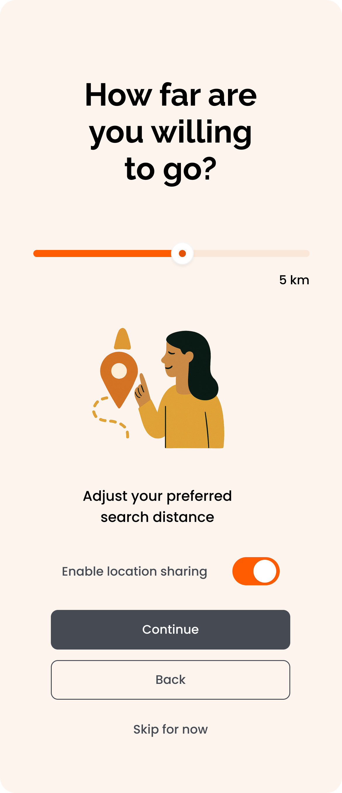
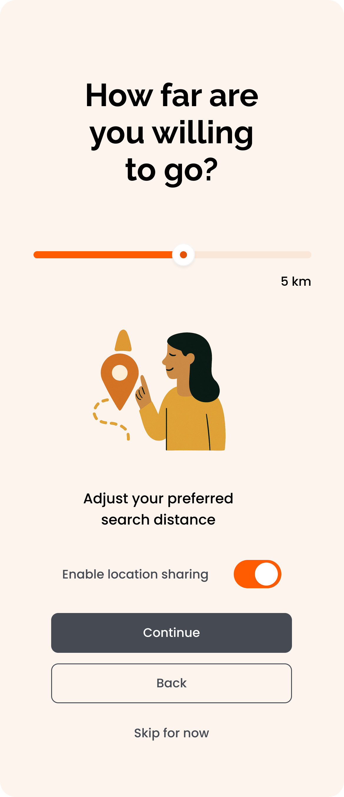
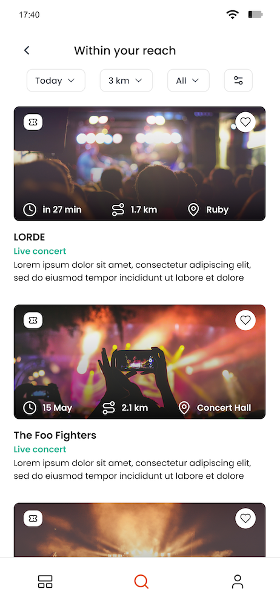
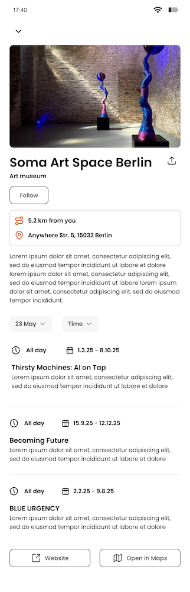
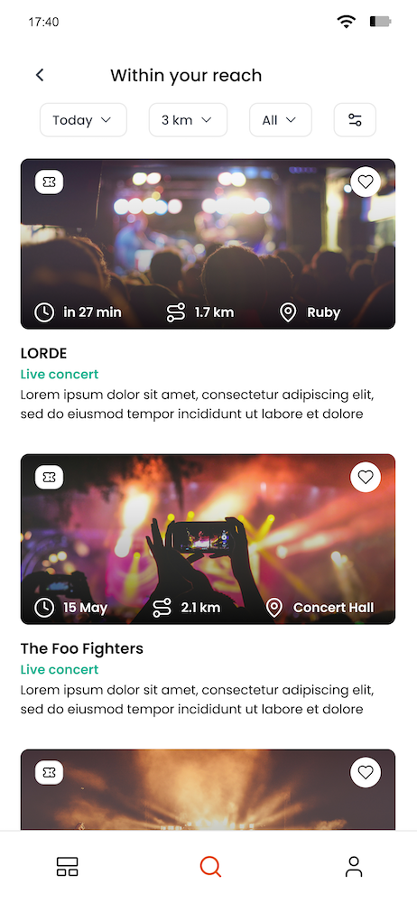
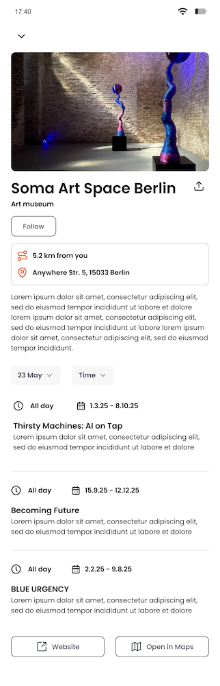

 





~ About
Map-first by design: the app opens on the map so context is instant - where you are, what’s around, and how soon it starts. Filters for date, distance and type are one tap away, recommendations adapt to your interests, and a short onboarding gathers just the essentials to personalize without friction.